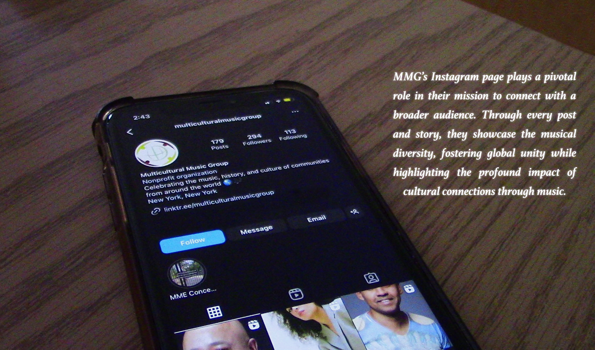
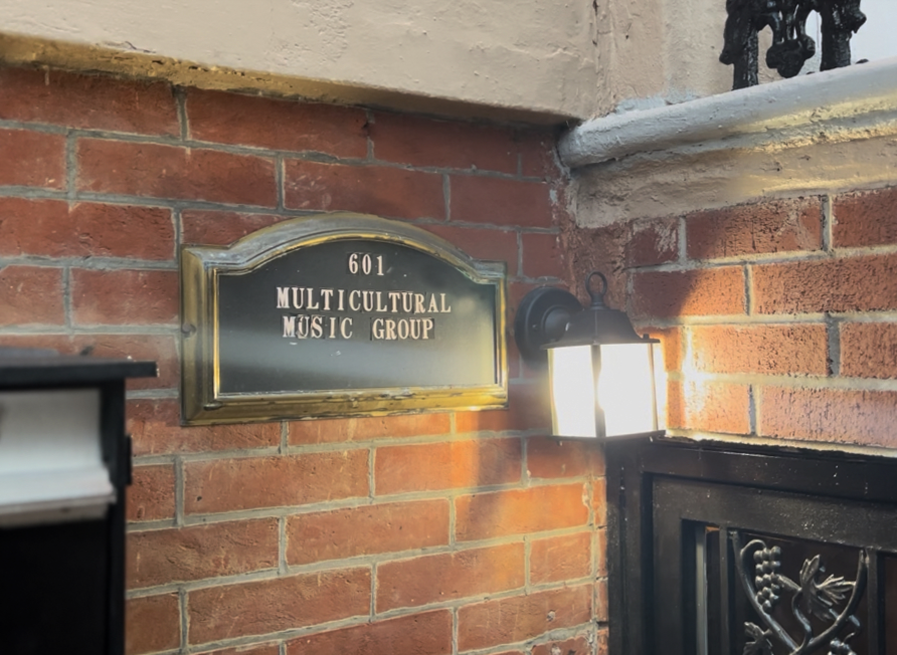
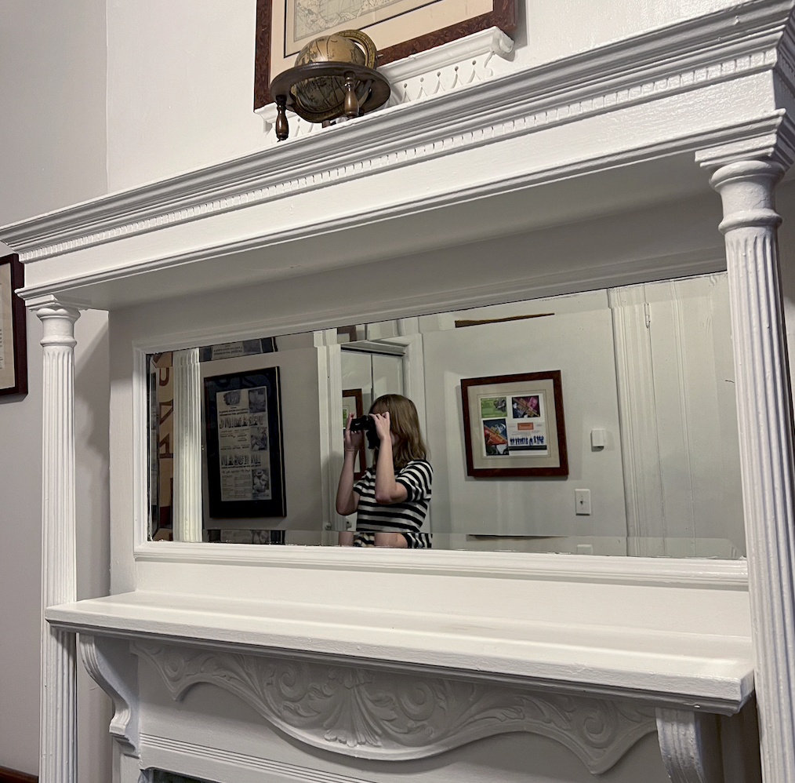
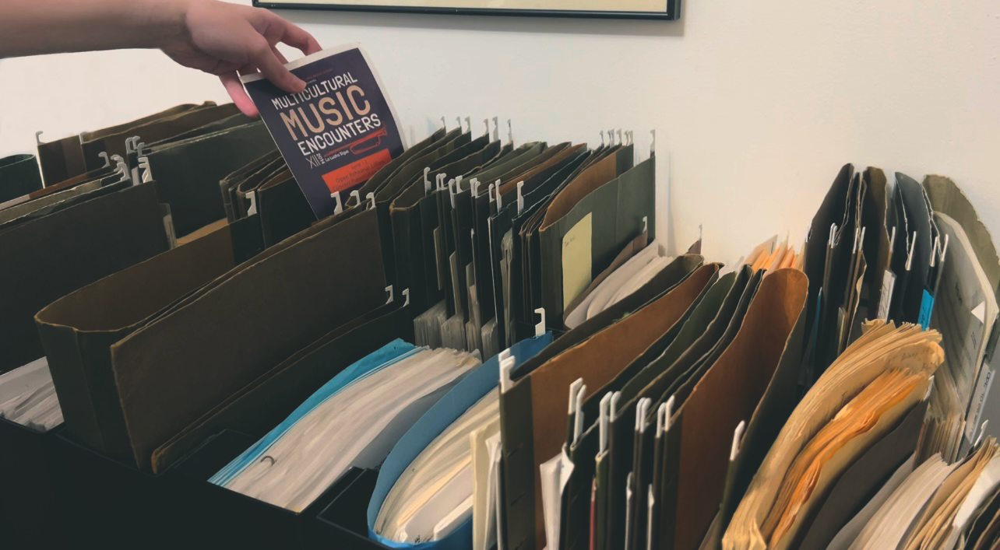
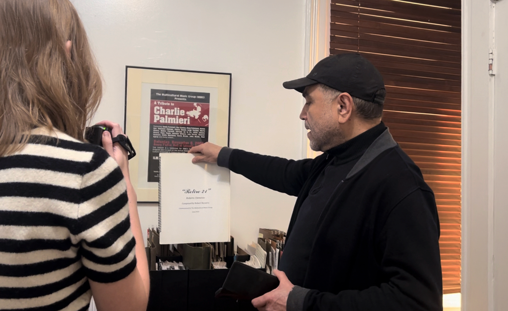

“Music for a Cause” is a 5-minute documentary that focuses on the Multicultural Music Group (MMG), a Bronx-based non-profit organization dedicated to educating others on music from many different cultural backgrounds to diversify the music scene in NYC. They organize presentations, performances, and discussions on different types of music, the struggles of cultural differences in music, and to introduce audiences to new sounds and styles of music.
In this film, we interviewed Dr. Luis Mojica, the director of MMG, who has been on the team for years trying to spread the message about the MMG. He shares the organization’s historical journey, its inner workings, performances, aspirations, and the hurdles they face, particularly financial challenges. Alongside the interview, we included the footage of MMG’s performances and behind the scenes moments. Through these visuals, we wanted to transport viewers into the immersive experience of MMG's events, fostering a deeper connection with their cause.
The primary goal of “Music for a Cause” is to educate students about the unifying power of music while elevating MMG's platform. By showcasing the universal language of music and MMG's mission, we hope to inspire support for their efforts in diversifying the music scene and fostering cultural understanding in our communities.
DOCUMENTARY IAMGES:

MMG's Instagram page plays a pivotal role in their mission to connect with a broader audience.
A nearby cultural center, an ideal space for MMG to expand its outreach and connect with the community.
Leilah Ramos, a Fordham student and the Social Media Coordinator of MMG.
DOCUMENTARY:
PROUCTION IAMGES:

Multicultural Music Group (MMG) and Dr. Luis Mojica's office in Bronx.

Caitlin, filming inside the MGG's office.

Paper records of MMG's past performaces.

Caitlin filming Dr. Luis Mojica as he discusses one of MMG's performaces.